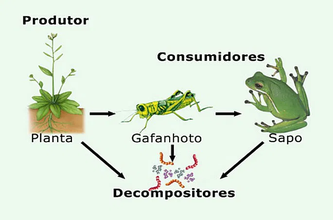

Ecologia
Conceitos Básicos
Espécime: indivíduo
População: conjunto de indivíduos da mesma espécie no mesmo local e tempo
Comunidade: conjunto de populações de espécies diferentes no mesmo local e tempo
Ecossistema: conjunto de comunidades e fatores abióticos no mesmo local e tempo
Habitat: "casa" de uma espécie
Nicho Ecológico: estudo do comportamento de uma espécie em seu habitat
Dinâmica Populacional
Densidade populacional: Número de indivíduos dividido pela área ou volume
Natalidade: número de nascimentos
Mortalidade: número de mortes
Imigração: entrada de indivíduos
Emigração: saída de indivíduos
Crescimento absoluto: (Nº final - Nº inicial) / Tempo
Crescimento relativo: Crescimento absoluto / Nº inicial
Curva de Crescimento Populacional
Potencial Biótico: ambiente ideal para o crescimento populacional
Resistência Relativa: fatores que limitam o crescimento da população
Crescimento Real: crescimento da população em um ambiente real
Carga Biótica Máxima: número máximo de indivíduos que um ambiente pode suportar
Cadeias e Teias Alimentares
Cadeia Alimentar: sequência de seres vivos em que um serve de alimento para outro
Teia Alimentar: interligação de várias cadeias alimentares
Fluxo de Energia: unidirecional

Produtores: seres que produzem seu próprio alimento, como plantas, bactérias e algas
Consumidor Primário: animais herbívoros
Consumidores Secundário, Terciário, etc.: animais carnívoros
Decompositores: transformam matéria orgânica em nutrientes para os produtores
Pirâmides Ecológicas
As pirâmides ecológicas representam a ordem de energia ou biomassa dos indivíduos em um ecossistema. Existem três tipos principais de pirâmides ecológicas: pirâmides de números, de biomassa e de energia. Cada uma delas tem características distintas.
Pirâmides de Números
A pirâmide de números representa a quantidade de indivíduos em cada nível trófico de uma cadeia alimentar. Ela pode ser:
- Normal: Quando o número de indivíduos diminui à medida que se sobe na cadeia alimentar. Exemplo: Em uma floresta, há muitas árvores (produtores) que são consumidas por poucos herbívoros (como cervos), que, por sua vez, são predados por ainda menos carnívoros (como lobos).
- Invertida: Quando há mais indivíduos no nível trófico superior do que na base da pirâmide. Exemplo: Em um ecossistema de parasitas, como o de uma árvore infetada por vermes, há mais parasitas (vermes) no nível superior do que árvores (produtores) no nível inferior.
Pirâmides de Biomassa
A pirâmide de biomassa mostra a quantidade de biomassa (massa de organismos vivos) presente em cada nível trófico. Ela pode ser invertida quando se trata de ecossistemas aquáticos. Exemplo:
- Normal: Em um ecossistema terrestre, como uma floresta tropical, a biomassa dos produtores (árvores) é muito maior do que a dos consumidores primários (herbívoros) ou secundários (carnívoros).
- Invertida (em ecossistemas aquáticos): Em um lago ou oceano, a biomassa dos produtores primários (plânctons) pode ser menor do que a dos consumidores primários (peixes pequenos), pois esses consumidores se alimentam rapidamente e crescem em grande número.
Pirâmides de Energia
A pirâmide de energia mostra a quantidade de energia disponível em cada nível trófico. Este tipo de pirâmide não pode ser invertido, pois sempre há uma diminuição na quantidade de energia à medida que se sobe na cadeia alimentar. Isso ocorre devido à perda de energia em forma de calor durante o processo de transferência entre os níveis tróficos. Exemplo:
- Normal: Em uma cadeia alimentar terrestre, como uma floresta, os produtores (plantas) absorvem energia solar, que é consumida pelos herbívoros e transferida para os carnívoros. A energia diminui em cada nível devido à perda de calor na respiração e nos processos metabólicos.